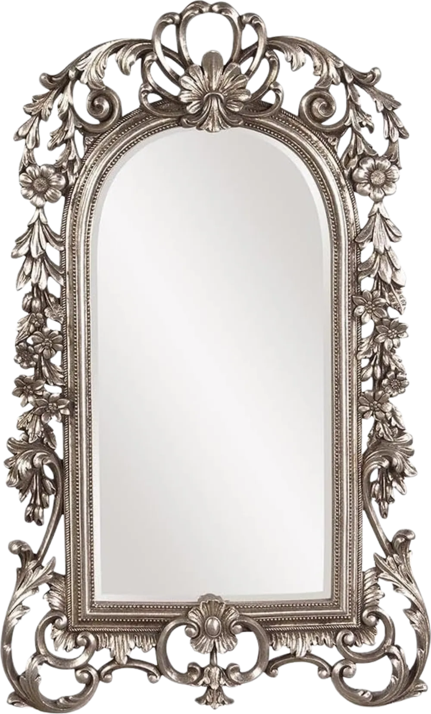

Save the Date
The Venue
Together with our loved ones
we will joyfully and eternally unite on
Saturday, the 20th of March, 2027.
Formal invitation with all the details to follow.
Order of Events
Drinks on arrival
In the main hall
Throughout the manor
Back in the main hall